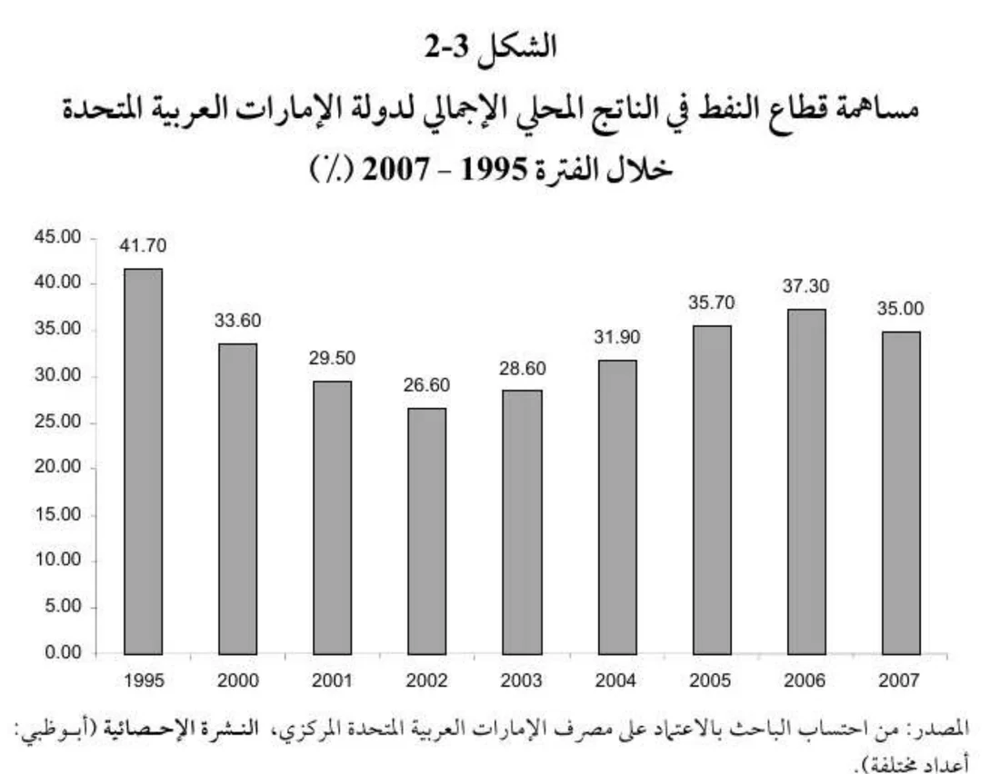
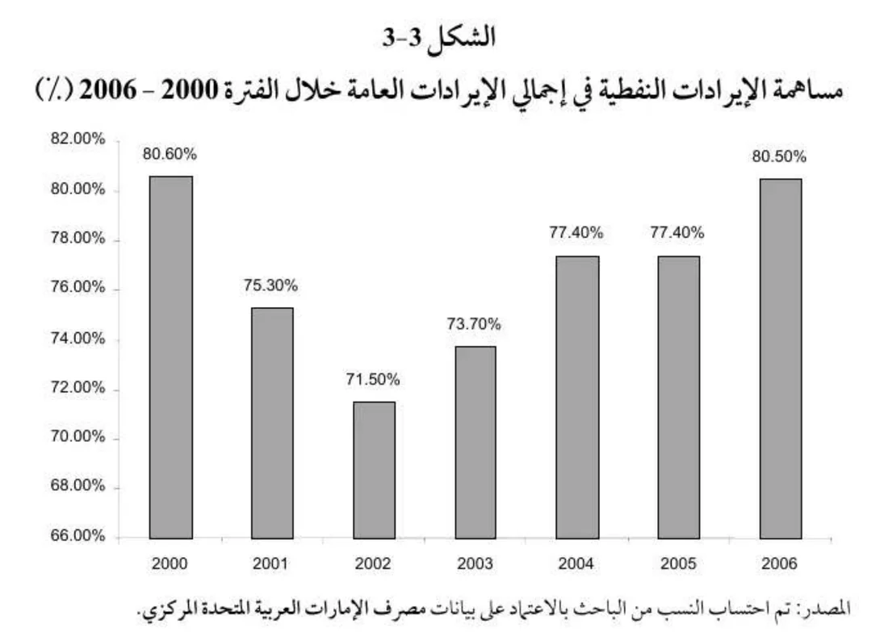

الدِّراساتُ الِاجْتِماعِيَّةُ وَالتَّرْبِيَةُ الْوَطَنِيَّةُ · الصَّفُّ الْعاشِرُ
الرُّؤْيَةُ الرّابِعَةُ: التَّحَدِّياتُ الْمُؤَسَّسِيَّةُ
الْوَحْدَةُ الثّالِثَةُ: تَحَدِّياتُ التَّنْمِيَةِ الْمُسْتَدامَةِ في دَوْلَةِ الْإِماراتِ · كِتابي الْكِتابُ ص 118–122
🎯 أُبَيِّنُ تَحَدِّياتِ مَنْظومَةِ الْبَحْثِ وَالتَّطْويرِ في الْإِماراتِ، وَأَقْتَرِحُ سُبُلَ تَجاوُزِها.
🔁 تَهْيِئَةٌ
⏱ 3 دَقائِقَ
نَتَذَكَّرُ مَعًا
مِنَ الدَّرْسِ السّابِقِ
ما الْفَقْرُ الْمائِيُّ الْحادُّ؟ وَما التَّصَحُّرُ؟
وَصْفُ الدُّوَلِ الَّتي يَقِلُّ نَصيبُ الْفَرْدِ… · ظاهِرَةٌ تَنْتُجُ مِنْ تَدَهْوُرِ الْأَراضي…
سُؤالُ الْيَوْمِ
🔬 بَلَغَ عَدَدُ الْباحِثينَ الْمُتَفَرِّغينَ لِكُلِّ (100) أَلْفٍ مِنَ السُّكّانِ في الْإِماراتِ (4.5) باحِثينَ. فَكَمْ هُوَ في الدُّوَلِ الْمُتَقَدِّمَةِ؟
الرُّؤْيَةُ الرّابِعَةُ: التَّحَدِّياتُ الْمُؤَسَّسِيَّةُ · الدِّراساتُ الِاجْتِماعِيَّةُ · الصَّفُّ الْعاشِرُ
✨ نَتَساءَلُ
⏱ 4 دَقائِقَ
لَحْظَةُ فُضولٍ

قالَ طالِبٌ: الْبَحْثُ الْعِلْمِيُّ تَرَفٌ! فَقالَ مُعَلِّمُنا: بَلْ هُوَ الطَّريقُ الْوَحيدُ لِنَقْلِ التِّقْنِيَّةِ لا اسْتِيرادِها.
💭 أُفَكِّرُ وَحْدي
🗣️ أُخْبِرُ زَميلي
👥 نُشارِكُ الصَّفَّ
الرُّؤْيَةُ الرّابِعَةُ: التَّحَدِّياتُ الْمُؤَسَّسِيَّةُ · الدِّراساتُ الِاجْتِماعِيَّةُ · الصَّفُّ الْعاشِرُ
🕵️ تَحَدّي الْمُحَقِّقينَ
⏱ 3 دَقائِقَ
خَمِّنِ الْمُصْطَلَحَ!
4 نِقاطٍ
أَنا نِسْبَةٌ أَوْصَتْ بِها مُنَظَّمَةُ الْأُمَمِ الْمُتَّحِدَةِ لِلتَّرْبِيَةِ وَالثَّقافَةِ وَالْعُلومِ.
3 نِقاطٍ
أَخُصُّ ما يَنْبَغي إِنْفاقُهُ عَلَى الْبَحْثِ وَالتَّطْويرِ مِنَ الدَّخْلِ الْقَوْمِيِّ.
2 نُقْطَتانِ
أَبْلُغُ (1%)، وَما زالَتِ النِّسْبَةُ في الدَّوْلَةِ تَقِلُّ عَنّي كَثيرًا.
1 نُقْطَةٌ
أَنا نِسْبَةُ الْإِنْفاقِ عَلَى الْبَحْثِ وَ… .
الرُّؤْيَةُ الرّابِعَةُ: التَّحَدِّياتُ الْمُؤَسَّسِيَّةُ · الدِّراساتُ الِاجْتِماعِيَّةُ · الصَّفُّ الْعاشِرُ
🔮 قَبْلَ الدَّرْسِ
⏱ 3 دَقائِقَ
أَتَوَقَّعُ قَبْلَ الْقِراءَةِ
📖 عُنْوانُ الدَّرْسِ
مَدْخَلاتُ الْبَحْثِ وَالتَّطْويرِ · وَمَخْرَجاتُهُ
كَمْ بَلَغَتْ نِسْبَةُ الْإِنْفاقِ عَلَى الْبَحْثِ وَالتَّطْويرِ مِنَ النّاتِجِ الْمَحَلِّيِّ؟
الرُّؤْيَةُ الرّابِعَةُ: التَّحَدِّياتُ الْمُؤَسَّسِيَّةُ · الدِّراساتُ الِاجْتِماعِيَّةُ · الصَّفُّ الْعاشِرُ
🎯 هَدَفُ الدَّرْسِ
⏱ 2 دَقيقَتانِ
وِجْهَتُنا الْيَوْمَ
🎯 أُبَيِّنُ تَحَدِّياتِ مَنْظومَةِ الْبَحْثِ وَالتَّطْويرِ في الْإِماراتِ، وَأَقْتَرِحُ سُبُلَ تَجاوُزِها.
⭐
مُبْتَدِئٌ
أُبَيِّنُ ضَعْفَ مَدْخَلاتِ الْبَحْثِ وَالتَّطْويرِ مِنَ الْبَشَرِ وَالْمالِ.
⭐⭐
مُتَطَوِّرٌ
أَقْرَأُ مُؤَشِّرَيِ الْبُحوثِ الْمَنْشورَةِ وَبَراءاتِ الِاخْتِراعِ.
⭐⭐⭐
مُتَمَكِّنٌ
أَقْتَرِحُ وَسائِلَ لِتَطْويرِ مَنْظومَةِ الْبَحْثِ وَالتَّطْويرِ.
الرُّؤْيَةُ الرّابِعَةُ: التَّحَدِّياتُ الْمُؤَسَّسِيَّةُ · الدِّراساتُ الِاجْتِماعِيَّةُ · الصَّفُّ الْعاشِرُ
🗺️ خَريطَةُ الْحِصَّةِ
⏱ 1 دَقيقَةٌ
رِحْلَةُ دَرْسِنا
الرُّؤْيَةُ الرّابِعَةُ: التَّحَدِّياتُ الْمُؤَسَّسِيَّةُ · الدِّراساتُ الِاجْتِماعِيَّةُ · الصَّفُّ الْعاشِرُ
📈 قِياسُ التَّقَدُّمِ
⏱ 2 دَقيقَتانِ
أَيْنَ أَنا الْآنَ؟
قَبْلَ الدَّرْسِ
أُقَيِّمُ نَفْسي مِنْ 1 إِلى 5 في كُلِّ مِعْيارٍ قَبْلَ الدَّرْسِ، وَأَحْتَفِظُ بِتَقْييمي.
1 = لَمْ أَصِلْ بَعْدُ · 5 = أَسْتَطيعُ أَنْ أَشْرَحَهُ لِغَيْري
الرُّؤْيَةُ الرّابِعَةُ: التَّحَدِّياتُ الْمُؤَسَّسِيَّةُ · الدِّراساتُ الِاجْتِماعِيَّةُ · الصَّفُّ الْعاشِرُ
🔑 كَلِماتٌ جَديدَةٌ
⏱ 5 دَقائِقَ
مَفاتيحُ الدَّرْسِ
مَدْخَلاتُ الْبَحْثِ وَالتَّطْويرِ
↻ اضْغَطْ لِلْمَعْنىجانِبانِ مُهِمّانِ هُما الْبَشَرُ وَالْمالُ؛ فَالْمَواردُ الْبَشَرِيَّةُ الْمُؤَهَّلَةُ تَأْهيلًا عالِيًا مِنْ أَهَمِّ مُقَوِّماتِ الْعَمَلِ في مَجالِ الْبَحْثِ الْعِلْمِيِّ وَالتَّطْويرِ التِّكْنولوجِيِّ، وَتُسْتَخْدَمُ أَحَدَ الْمَعايِرِ الْمُهِمَّةِ في تَقْييمِ مَسيرَةِ التَّنْمِيَةِ التِّكْنولوجِيَّةِ.
مَخْرَجاتُ الْبَحْثِ وَالتَّطْويرِ
↻ اضْغَطْ لِلْمَعْنىما تنتجه منظومة البحث من بحوث علمية منشورة وبراءات اختراع مسجلة؛ ويعرض الكتاب تقييما تاريخيا لمردودات البحث العلمي؛ أما المقارنة الحالية فتحتاج بيانات حديثة.
بَراءَةُ الِاخْتِراعِ
↻ اضْغَطْ لِلْمَعْنىوَثيقَةٌ تُسَجَّلُ لِصاحِبِ ابْتِكارٍ جَديدٍ؛ وَيُعَدُّ مُؤَشِّرُ تَسْجيلِها في الْمَكْتَبِ الْأَمْريكِيِّ لِبَراءاتِ الِاخْتِراعِ وَالْعَلاماتِ التِّجارِيَّةِ أَحَدَ الْمُؤَشِّراتِ الْمُسْتَخْدَمَةِ في قِياسِ إِنْتاجِيَّةِ الْبَحْثِ وَالتَّطْويرِ.
الْمَسْؤولِيَّةُ الِاجْتِماعِيَّةُ لِلشَّرِكاتِ
↻ اضْغَطْ لِلْمَعْنىإِطارٌ يُشَجَّعُ مِنْ خِلالِهِ الْقِطاعُ الْخاصُّ عَلى دَعْمِ أَنْشِطَةِ مَراكِزِ الْبَحْثِ وَالتَّطْويرِ في الدَّوْلَةِ؛ وَقَدْ وَصَلَتْ مُساهَمَةُ الْقِطاعِ الْخاصِّ في تَمْويلِ الْبَحْثِ وَالتَّطْويرِ في الْيابانِ إِلى (70%).
الرُّؤْيَةُ الرّابِعَةُ: التَّحَدِّياتُ الْمُؤَسَّسِيَّةُ · الدِّراساتُ الِاجْتِماعِيَّةُ · الصَّفُّ الْعاشِرُ
🔗 نُطَبِّقُ مَعًا
⏱ 4 دَقائِقَ
أَصِلُ الْكَلِمَةَ بِمَعْناها
مَدْخَلاتُ الْبَحْثِ وَالتَّطْويرِ
مَخْرَجاتُ الْبَحْثِ وَالتَّطْويرِ
بَراءَةُ الِاخْتِراعِ
الْمَسْؤولِيَّةُ الِاجْتِماعِيَّةُ لِلشَّرِكاتِ
ما تنتجه منظومة البحث من بحوث علمية منشورة وبراءات اختراع مسجلة؛ ويعرض الكتاب تقييما تاريخيا لمردودات البحث العلمي؛ أما المقارنة الحالية فتحتاج بيانات حديثة.
وَثيقَةٌ تُسَجَّلُ لِصاحِبِ ابْتِكارٍ جَديدٍ؛ وَيُعَدُّ مُؤَشِّرُ تَسْجيلِها في الْمَكْتَبِ الْأَمْريكِيِّ لِبَراءاتِ الِاخْتِراعِ وَالْعَلاماتِ التِّجارِيَّةِ أَحَدَ الْمُؤَشِّراتِ الْمُسْتَخْدَمَةِ في قِياسِ إِنْتاجِيَّةِ الْبَحْثِ وَالتَّطْويرِ.
إِطارٌ يُشَجَّعُ مِنْ خِلالِهِ الْقِطاعُ الْخاصُّ عَلى دَعْمِ أَنْشِطَةِ مَراكِزِ الْبَحْثِ وَالتَّطْويرِ في الدَّوْلَةِ؛ وَقَدْ وَصَلَتْ مُساهَمَةُ الْقِطاعِ الْخاصِّ في تَمْويلِ الْبَحْثِ وَالتَّطْويرِ في الْيابانِ إِلى (70%).
جانِبانِ مُهِمّانِ هُما الْبَشَرُ وَالْمالُ؛ فَالْمَواردُ الْبَشَرِيَّةُ الْمُؤَهَّلَةُ تَأْهيلًا عالِيًا مِنْ أَهَمِّ مُقَوِّماتِ الْعَمَلِ في مَجالِ الْبَحْثِ الْعِلْمِيِّ وَالتَّطْويرِ التِّكْنولوجِيِّ، وَتُسْتَخْدَمُ أَحَدَ الْمَعايِرِ الْمُهِمَّةِ في تَقْييمِ مَسيرَةِ التَّنْمِيَةِ التِّكْنولوجِيَّةِ.
الرُّؤْيَةُ الرّابِعَةُ: التَّحَدِّياتُ الْمُؤَسَّسِيَّةُ · الدِّراساتُ الِاجْتِماعِيَّةُ · الصَّفُّ الْعاشِرُ
🚩 كَلِمَةُ الدَّرْسِ
⏱ 4 دَقائِقَ
رِحْلَتي مَعَ عِبارَةِ «نَقْلٍ عَمودِيٍّ لِلتِّكْنولوجْيا»
الْمَعْنى
امْتِلاكِ التِّقْنِيَّةِ وَتَوْطينِها لا مُجَرَّدِ اسْتيرادِها.
✅
نَقولُ: هٰذَا النَّشاطُ يَعْكِسُ لَنا وُجودَ نَقْلٍ عَمودِيٍّ حَقيقِيٍّ لِلتِّكْنولوجْيا قِوامُهُ الْإِمْكاناتُ الذّاتِيَّةُ.
✅
نَقولُ: الْجُهْدُ الْمَبْذولُ في الْبَحْثِ وَالتَّطْويرِ هُوَ الَّذي يُحَدِّدُ مُسْتَقْبَلَ تَطْويرِ الْقُدُراتِ التِّكْنولوجِيَّةِ الذّاتِيَّةِ.
❌
لا نَقولُ: النَّقْلُ الْعَمودِيُّ أَيْ شِراءُ الْأَجْهِزَةِ الْجاهِزَةِ.
الرُّؤْيَةُ الرّابِعَةُ: التَّحَدِّياتُ الْمُؤَسَّسِيَّةُ · الدِّراساتُ الِاجْتِماعِيَّةُ · الصَّفُّ الْعاشِرُ
📖 بِناءُ الْمَعْرِفَةِ
⏱ 4 دَقائِقَ
نَتَعَلَّمُ 1
قراءة تاريخية: تَتَضَمَّنُ مَدْخَلاتُ الْبَحْثِ وَالتَّطْويرِ جانِبَيْنِ مُهِمَّيْنِ هُما الْبَشَرُ وَالْمالُ. وَعَلَى الرَّغْمِ مِنْ أَنَّ دَوْلَةَ الْإِماراتِ قَدْ بَذَلَتْ جُهودًا في مَجالِ تَهْيِئَةِ الْقُدُراتِ الْبَشَرِيَّةِ الْعِلْمِيَّةِ وَالتِّقْنِيَّةِ الْعامِلَةِ في الْبَحْثِ وَالتَّطْويرِ، فَإِنَّ أَعْدادَ هٰذِهِ الْفِئَةِ لا تَزالُ مُنْخَفِضَةً؛ حَيْثُ بَلَغَ عَدَدُ الْباحِثينَ الْمُتَفَرِّغينَ لِكُلِّ (100) أَلْفٍ مِنَ السُّكّانِ (4.5) باحِثينَ، وَهٰذِهِ النِّسْبَةُ تَبْدو ضَئيلَةً مُقارَنَةً بِمَثيلَتِها في الدُّوَلِ الْمُتَقَدِّمَةِ الَّتي بَلَغَتْ نَحْوَ (370) باحِثًا.
الرُّؤْيَةُ الرّابِعَةُ: التَّحَدِّياتُ الْمُؤَسَّسِيَّةُ · الدِّراساتُ الِاجْتِماعِيَّةُ · الصَّفُّ الْعاشِرُ
📖 بِناءُ الْمَعْرِفَةِ
⏱ 4 دَقائِقَ
نَتَعَلَّمُ 2
قراءة تاريخية: وَيُشَكِّلُ انْخِفاضُ الِاعْتِماداتِ الْمالِيَّةِ لِلْبَحْثِ وَالتَّطْويرِ أَحَدَ التَّحَدِّياتِ الْكَبيرَةِ الَّتي تَحُدُّ مِنْ تَطَوُّرِ الْبَحْثِ الْعِلْمِيِّ؛ فَقَدِ انْخَفَضَ الْإِنْفاقُ كَنِسْبَةٍ مِنَ النّاتِجِ الْمَحَلِّيِّ الْإِجْمالِيِّ مِنْ (0.03%) في عامِ 1988 م إِلى (0.02%) خِلالَ الْفَتْرَةِ 1996–2003 م، وَهِيَ نِسْبَةٌ تَقِلُّ كَثيرًا عَنْ نَظيرَتِها في الدُّوَلِ الْمُتَقَدِّمَةِ (2.5%)، وَتَقِلُّ كَذٰلِكَ عَنِ النِّسْبَةِ الَّتي أَوْصَتْ بِهَا الْيونِسْكو وَهِيَ (1%) مِنَ الدَّخْلِ الْقَوْمِيِّ لِلدَّوْلَةِ.
الرُّؤْيَةُ الرّابِعَةُ: التَّحَدِّياتُ الْمُؤَسَّسِيَّةُ · الدِّراساتُ الِاجْتِماعِيَّةُ · الصَّفُّ الْعاشِرُ
📖 بِناءُ الْمَعْرِفَةِ
⏱ 4 دَقائِقَ
نَتَعَلَّمُ 3
قراءة تاريخية: ويلاحظ أن مصادر تمويل الإنفاق على البحث والتطوير في الدولة معظمها حكومية، ويصف المؤلف مساهمة القطاع الخاص في فترة بياناته بالضعف؛ ولا يعمم ذلك على الوضع الحالي، بعكس الحال في اليابان حيث وصلت مساهمة القطاع الخاص في تمويل البحث والتطوير إلى (70%). وأما مخرجات البحث فإن عدد البحوث العلمية المنشورة في دوريات عالمية محكمة لم يتجاوز (159) بحثا في عام 2001 م مقارنة بـ(150) بحثا في عام 1995 م.
الرُّؤْيَةُ الرّابِعَةُ: التَّحَدِّياتُ الْمُؤَسَّسِيَّةُ · الدِّراساتُ الِاجْتِماعِيَّةُ · الصَّفُّ الْعاشِرُ
📖 بِناءُ الْمَعْرِفَةِ
⏱ 4 دَقائِقَ
نَتَعَلَّمُ 4
قراءة تاريخية: وَتُشيرُ الْإِحْصاءاتُ إِلى أَنَّ ناتِجَ الْبَحْثِ وَالتَّطْويرِ وَفْقًا لِمُؤَشِّرِ بَراءاتِ الِاخْتِراعِ ضَئيلٌ جِدًّا؛ إِذْ بَلَغَ مَجْموعُ الْبَراءاتِ الْمُسَجَّلَةِ في الْمَكْتَبِ الْأَمْريكِيِّ (54) بَراءَةً خِلالَ السَّنَواتِ الثَّلاثينَ الْمُنْصَرِمَةِ، وَحَقَّقَتْ (0.87) بَراءَةَ اخْتِراعٍ لِكُلِّ مِلْيونِ نَسَمَةٍ مُقارَنَةً بِـ(2.1) في الْكُوَيْتِ وَ(0.65) في السُّعودِيَّةِ وَ(0.62) في قَطَرَ. وَتَتَطَلَّبُ مُواجَهَةُ هٰذِهِ التَّحَدِّياتِ رَفْعَ نِسْبَةِ الْإِنْفاقِ إِلى (1%) ثُمَّ إِلى (1.5%) في عامِ 2020 م، وَتَشْجيعَ الْقِطاعِ الْخاصِّ في إِطارِ الْمَسْؤولِيَّةِ الِاجْتِماعِيَّةِ لِلشَّرِكاتِ.
الرُّؤْيَةُ الرّابِعَةُ: التَّحَدِّياتُ الْمُؤَسَّسِيَّةُ · الدِّراساتُ الِاجْتِماعِيَّةُ · الصَّفُّ الْعاشِرُ
📘 نَقْرَأُ النَّصَّ
⏱ 4 دَقائِقَ
مِنْ كِتابي
تنبيه سياقي: بيانات البحث والتطوير والتوقعات هنا تخص فترة قديمة، معظمها حتى أوائل الألفية. هدف 2020 ليس قياسا لنتيجة، ولا تثبت هذه الأرقام ضعف القطاع الحالي.
✨ أَنْقُرُ الْكَلِمَةَ الْمُظَلَّلَةَ لِمَعْناها
كِتابُ الطّالِبِ الْكِتابُ ص 118–122
الرُّؤْيَةُ الرّابِعَةُ: التَّحَدِّياتُ الْمُؤَسَّسِيَّةُ · الدِّراساتُ الِاجْتِماعِيَّةُ · الصَّفُّ الْعاشِرُ
🤔 فَكِّرْ · زاوِجْ · شارِكْ
⏱ 3 دَقائِقَ
أُفَكِّرُ مَعَ زَميلي
لِمَ عُدَّ الْبَحْثُ الْعِلْمِيُّ تَحَدِّيًا «مُؤَسَّسِيًّا» لا عِلْمِيًّا فَحَسْبُ؟
الرُّؤْيَةُ الرّابِعَةُ: التَّحَدِّياتُ الْمُؤَسَّسِيَّةُ · الدِّراساتُ الِاجْتِماعِيَّةُ · الصَّفُّ الْعاشِرُ
1 «بَلَغَ عَدَدُ الْباحِثينَ الْمُتَفَرِّغينَ لِكُلِّ 100 أَلْفٍ مِنَ السُّكّانِ في الْإِماراتِ 4.5 باحِثينَ.»
2 «يُمَوِّلُ الْقِطاعُ الْخاصُّ مُعْظَمَ الْإِنْفاقِ عَلَى الْبَحْثِ وَالتَّطْويرِ في الدَّوْلَةِ.»
3 «أَوْصَتِ الْيونِسْكو بِأَنْ يَبْلُغَ الْإِنْفاقُ عَلَى الْبَحْثِ وَالتَّطْويرِ 1% مِنَ الدَّخْلِ الْقَوْمِيِّ.»
4 «تَجاوَزَ عَدَدُ الْبُحوثِ الْعِلْمِيَّةِ الْمَنْشورَةِ عامَ 2001 م أَلْفَ بَحْثٍ.»
الرُّؤْيَةُ الرّابِعَةُ: التَّحَدِّياتُ الْمُؤَسَّسِيَّةُ · الدِّراساتُ الِاجْتِماعِيَّةُ · الصَّفُّ الْعاشِرُ
👥 خَريطَةُ الْمَجْموعاتِ
⏱ 10 دَقائِقَ
نَعْمَلُ مَعًا
📖
الْمَجْموعَةُ 1
نَرْسُمُ وَنُسَجِّلُ
⭐
🧭
الْمَجْموعَةُ 2
نُحَدِّدُ عَلى الْخَريطَةِ
⭐⭐
🎭
الْمَجْموعَةُ 3
نُمَثِّلُ الْمَوْقِفَ
⭐⭐⭐
✍️
الْمَجْموعَةُ 4
نَكْتُبُ وَنَعْرِضُ
⭐⭐⭐
🧭 الْقائِدُ
✏️ الرَّسّامُ
🗣️ الْمُتَحَدِّثُ
⏰ حارِسُ الْوَقْتِ
الرُّؤْيَةُ الرّابِعَةُ: التَّحَدِّياتُ الْمُؤَسَّسِيَّةُ · الدِّراساتُ الِاجْتِماعِيَّةُ · الصَّفُّ الْعاشِرُ
🧭 خَريطَةُ الْعَمَلِ الْجَماعِيِّ
⏱ 15 دَقيقَةً
كُلُّ مَجْموعَةٍ = مِعْيارُ نَجاحٍ
الْمَجْموعَةُ 1
مِعْيارُ 1
نَكْتُبُ أَرْقامَ الْباحِثينَ
الْمَجْموعَةُ 2
مِعْيارُ 2
نُقارِنُ نِسَبَ الْإِنْفاقِ
الْمَجْموعَةُ 3
مِعْيارُ 3
نَقْرَأُ مُؤَشِّرَ الْمَخْرَجاتِ
الْمَجْموعَةُ 4
مِعْيارُ 4
نَقْتَرِحُ خُطَّةَ تَطْويرٍ
🧭
الْقائِدُ
يُديرُ الْوَقْتَ وَالْمَهامَّ
🔎
الْباحِثُ
يَسْتَخْرِجُ الْأَدِلَّةَ
✏️
الْكاتِبُ
يُدَوِّنُ الْإِجابَةَ
🗣️
الْمُقَدِّمُ
يَعْرِضُ في دَقيقَتَيْنِ
عَمَلٌ 8 د
←
عَرْضٌ 2 د
←
تَغْذِيَةُ الْأَقْرانِ
←
تَعْقيبُ الْمُعَلِّمِ
←
نَموذَجُ الْإِجابَةِ
الرُّؤْيَةُ الرّابِعَةُ: التَّحَدِّياتُ الْمُؤَسَّسِيَّةُ · الدِّراساتُ الِاجْتِماعِيَّةُ · الصَّفُّ الْعاشِرُ
👥 الْمَجْموعَةُ 1
⏱ 12 دَقيقَةً
📝 مِعْيارُ النَّجاحِ 1
نَكْتُبُ أَرْقامَ الْباحِثينَ
الْمُهِمَّةُ الْأَساسِيَّةُ · لِلْجَميعِ
اكْتُبوا عَدَدَ الْباحِثينَ الْمُتَفَرِّغينَ لِكُلِّ 100 أَلْفٍ.
🔍 الْباحِثُاكْتُبوا نَظيرَهُ في الدُّوَلِ الْمُتَقَدِّمَةِ.
✍️ الْكاتِبُاكْتُبوا عَدَدَ الْمُساعِدينَ.
🗣️ الْمُقَدِّمُ★ التَّحَدّي الْأَكْبَرُ
عَلامَ تَدُلُّ قِلَّةُ الْمُساعِدينَ؟
الْمُنْتَجُ: جَدْوَلُ مُقارَنَةٍ بِثَلاثِ خاناتٍ
دَعْمٌ مَرِنٌ · هَدَفٌ واحِدٌ
★ اكْتُبوا عَدَدَ الْباحِثينَ.
★★ أَضيفُوا الْمُقارَنَةَ.
★★★ أَضيفوا عَدَدَ الْمُساعِدينَ.
الرُّؤْيَةُ الرّابِعَةُ: التَّحَدِّياتُ الْمُؤَسَّسِيَّةُ · الدِّراساتُ الِاجْتِماعِيَّةُ · الصَّفُّ الْعاشِرُ
👥 الْمَجْموعَةُ 2
⏱ 12 دَقيقَةً
📝 مِعْيارُ النَّجاحِ 2
نُقارِنُ نِسَبَ الْإِنْفاقِ
الْمُهِمَّةُ الْأَساسِيَّةُ · لِلْجَميعِ
اكْتُبوا نِسْبَةَ الْإِنْفاقِ عامَ 1988 م وَفَتْرَةَ 1996–2003 م.
🔍 الْباحِثُاكْتُبوا نَظيرَتَها في الدُّوَلِ الْمُتَقَدِّمَةِ.
✍️ الْكاتِبُاكْتُبوا تَوْصِيَةَ الْيونِسْكو.
🗣️ الْمُقَدِّمُ★ التَّحَدّي الْأَكْبَرُ
لِمَ يَعْزِفُ الْقِطاعُ الْخاصُّ عَنِ التَّمْويلِ؟
الْمُنْتَجُ: بِطاقَةُ مُقارَنَةٍ بِثَلاثِ خاناتٍ
دَعْمٌ مَرِنٌ · هَدَفٌ واحِدٌ
★ اكْتُبوا نِسْبَةَ الْإِنْفاقِ.
★★ أَضيفوا نِسْبَةَ الدُّوَلِ الْمُتَقَدِّمَةِ.
★★★ أَضيفوا تَوْصِيَةَ الْيونِسْكو.
الرُّؤْيَةُ الرّابِعَةُ: التَّحَدِّياتُ الْمُؤَسَّسِيَّةُ · الدِّراساتُ الِاجْتِماعِيَّةُ · الصَّفُّ الْعاشِرُ
👥 الْمَجْموعَةُ 3
⏱ 12 دَقيقَةً
📝 مِعْيارُ النَّجاحِ 3
نَقْرَأُ مُؤَشِّرَ الْمَخْرَجاتِ
الْمُهِمَّةُ الْأَساسِيَّةُ · لِلْجَميعِ
اكْتُبوا عَدَدَ الْبُحوثِ عامَيْ 1995 م وَ2001 م.
🔍 الْباحِثُاكْتُبوا عَدَدَ الْبَراءاتِ خِلالَ ثَلاثينَ سَنَةً.
✍️ الْكاتِبُاكْتُبُوا الْبَراءاتِ لِكُلِّ مِلْيونِ نَسَمَةٍ وَمُقارَنَتَها.
🗣️ الْمُقَدِّمُ★ التَّحَدّي الْأَكْبَرُ
ماذا كَلَّفَ ضَعْفُ الْمَخْرَجاتِ الدَّوْلَةَ؟
الْمُنْتَجُ: لَوْحَةُ مُؤَشِّراتٍ بِثَلاثِ خاناتٍ
دَعْمٌ مَرِنٌ · هَدَفٌ واحِدٌ
★ اكْتُبوا عَدَدَ الْبُحوثِ.
★★ أَضيفوا عَدَدَ الْبَراءاتِ.
★★★ أَضيفُوا الْمُقارَنَةَ الْخَليجِيَّةَ.
الرُّؤْيَةُ الرّابِعَةُ: التَّحَدِّياتُ الْمُؤَسَّسِيَّةُ · الدِّراساتُ الِاجْتِماعِيَّةُ · الصَّفُّ الْعاشِرُ
👥 الْمَجْموعَةُ 4
⏱ 12 دَقيقَةً
📝 مِعْيارُ النَّجاحِ 4
نَقْتَرِحُ خُطَّةَ تَطْويرٍ
الْمُهِمَّةُ الْأَساسِيَّةُ · لِلْجَميعِ
اكْتُبوا نِسْبَةَ الْإِنْفاقِ الْمُسْتَهْدَفَةَ وَسَنَتَها.
🔍 الْباحِثُاكْتُبوا دَوْرَ الْقِطاعِ الْخاصِّ.
✍️ الْكاتِبُاكْتُبوا مُقْتَرَحًا مِنْ عِنْدِكُمْ لِمَدْرَسَتِكُمْ.
🗣️ الْمُقَدِّمُ★ التَّحَدّي الْأَكْبَرُ
كَيْفَ نَرْبِطُ مَراكِزَ الْأَبْحاثِ بِمُتَطَلَّباتِ التَّنْمِيَةِ؟
الْمُنْتَجُ: بِطاقَةُ خُطَّةٍ بِثَلاثِ خاناتٍ
دَعْمٌ مَرِنٌ · هَدَفٌ واحِدٌ
★ اكْتُبُوا النِّسْبَةَ الْمُسْتَهْدَفَةَ.
★★ أَضيفوا سَنَتَها.
★★★ أَضيفوا دَوْرَ الْقِطاعِ الْخاصِّ.
الرُّؤْيَةُ الرّابِعَةُ: التَّحَدِّياتُ الْمُؤَسَّسِيَّةُ · الدِّراساتُ الِاجْتِماعِيَّةُ · الصَّفُّ الْعاشِرُ
✅ نَتَحَقَّقُ مَعًا
⏱ 4 دَقائِقَ
نَماذِجُ الْإِجابَةِ
📖
الْمَجْموعَةُ 1
4.5 باحِثينَ لِكُلِّ 100 أَلْفٍ مِنَ السُّكّانِ · 370 باحِثًا في الدُّوَلِ الْمُتَقَدِّمَةِ · 8.6 مُساعِدٍ لِكُلِّ 100 أَلْفٍ
🧭
الْمَجْموعَةُ 2
مِنْ 0.03% عامَ 1988 م إِلى 0.02% · الدُّوَلُ الْمُتَقَدِّمَةُ 2.5% · تَوْصِيَةُ الْيونِسْكو 1%
🎭
الْمَجْموعَةُ 3
159 بَحْثًا عامَ 2001 م مُقابِلَ 150 عامَ 1995 م · 54 بَراءَةً خِلالَ ثَلاثينَ سَنَةً · 0.87 بَراءَةٍ لِكُلِّ مِلْيونِ نَسَمَةٍ
✍️
الْمَجْموعَةُ 4
رَفْعُ الْإِنْفاقِ إِلى 1% ثُمَّ 1.5% عامَ 2020 م · تَشْجيعُ الْقِطاعِ الْخاصِّ · الْمَسْؤولِيَّةُ الِاجْتِماعِيَّةُ لِلشَّرِكاتِ
الرُّؤْيَةُ الرّابِعَةُ: التَّحَدِّياتُ الْمُؤَسَّسِيَّةُ · الدِّراساتُ الِاجْتِماعِيَّةُ · الصَّفُّ الْعاشِرُ
⭐ التَّغْذِيَةُ الرّاجِعَةُ مِنَ الْأَقْرانِ
⏱ 3 دَقائِقَ
نَجْمَتانِ وَأُمْنِيَةٌ
تَعْليقُكَ عَلى عَرْضِ زُمَلائِكَ نَصيحَةٌ: سِرُّها اللُّطْفُ، وَغايَتُها التَّحْسينُ.
★ النَّجْمَةُ الْأولى
«أَعْجَبَني في عَرْضِكُمْ …»
★ النَّجْمَةُ الثّانِيَةُ
«كانَ دَليلُكُمْ مُقْنِعًا لِأَنَّ …»
✦ الْأُمْنِيَةُ
«أَتَمَنّى لَوْ أَضَفْتُمْ …»
✓ دَليلٌ مِنَ النَّصِّ
✓ مِثالٌ واقِعِيٌّ
✓ لُغَةٌ سَليمَةٌ
✓ رَبْطٌ بِالْوَطَنِ
الرُّؤْيَةُ الرّابِعَةُ: التَّحَدِّياتُ الْمُؤَسَّسِيَّةُ · الدِّراساتُ الِاجْتِماعِيَّةُ · الصَّفُّ الْعاشِرُ
🌱 مِنْ دَرْسي إِلى سُلوكي
⏱ 3 دَقائِقَ
قِيَمٌ وَسُلوكِيّاتٌ
1
أُحِبُّ السُّؤالَ وَالتَّجْريبَ فَمِنْهُما يولَدُ الِاخْتِراعُ.
2
أَرْبِطُ ما أَتَعَلَّمُهُ بِحاجَةٍ حَقيقِيَّةٍ في مُجْتَمَعي.
الرُّؤْيَةُ الرّابِعَةُ: التَّحَدِّياتُ الْمُؤَسَّسِيَّةُ · الدِّراساتُ الِاجْتِماعِيَّةُ · الصَّفُّ الْعاشِرُ
🇦🇪 أَنا مُواطِنٌ إيجابِيٌّ
⏱ 3 دَقائِقَ
مِنْ دَرْسي إِلى وَطَني
🇦🇪 حَقيقَةٌ وَطَنِيَّةٌ
بَلَغَ مَجْموعُ بَراءاتِ الِاخْتِراعِ الْمُسَجَّلَةِ لِدَوْلَةِ الْإِماراتِ في الْمَكْتَبِ الْأَمْريكِيِّ لِبَراءاتِ الِاخْتِراعِ وَالْعَلاماتِ التِّجارِيَّةِ (54) بَراءَةً خِلالَ السَّنَواتِ الثَّلاثينَ الْمُنْصَرِمَةِ وَفْقًا لِلتَّقْريرِ الْعالَمِيِّ الصّادِرِ مَطْلَعَ عامِ 2007 م.
مِنْ قِيَمِ هٰذِهِ الرُّؤْيَةِ: طَلَبُ الْعِلْمِ، وَالِابْتِكارُ، وَالْمَسْؤولِيَّةُ الْمُجْتَمَعِيَّةُ.
💡 كَيْفَ أُطَبِّقُ هذا في مَدْرَسَتي وَوَطَني هذا الْأُسْبوعَ؟
الرُّؤْيَةُ الرّابِعَةُ: التَّحَدِّياتُ الْمُؤَسَّسِيَّةُ · الدِّراساتُ الِاجْتِماعِيَّةُ · الصَّفُّ الْعاشِرُ
💡 إِثْراءٌ: هَلْ تَعْلَمُ؟
⏱ 3 دَقائِقَ
نُوَسِّعُ الْأُفُقَ
📗 كُلْفَةُ ضَعْفِ الْبَحْثِ
أَدّى ضَعْفُ مَخْرَجاتِ الْبَحْثِ وَالتَّطْويرِ إِلى زِيادَةِ قيمَةِ الْعُقودِ الْخارِجِيَّةِ الْمُبْرَمَةِ خِلالَ الْفَتْرَةِ 1992–2004 م لِشِراءِ الْمُعَدّاتِ وَتَشْييدِ الْفَعالِيّاتِ الصِّناعِيَّةِ وَمُنْشَآتِ الْبُنْيَةِ الْأَساسِيَّةِ، وَالَّتي وَصَلَتْ إِلى أَكْثَرَ مِنْ (42) مِلْيارَ دولارٍ.
🌐 الْبَراءاتُ خَليجِيًّا
حَقَّقَتِ الْإِماراتُ (0.87) بَراءَةَ اخْتِراعٍ لِكُلِّ مِلْيونِ نَسَمَةٍ مُقارَنَةً بِـ(2.1) بَراءَةٍ في دَوْلَةِ الْكُوَيْتِ وَ(0.65) بَراءَةٍ في الْمَمْلَكَةِ الْعَرَبِيَّةِ السُّعودِيَّةِ وَ(0.62) بَراءَةٍ في دَوْلَةِ قَطَرَ، وَفْقًا لِلتَّقْريرِ الْعالَمِيِّ الصّادِرِ مَطْلَعَ عامِ 2007 م.
🧠 مَهارَةُ الرُّؤْيَةِ: مَدْخَلاتٌ وَمَخْرَجاتٌ
مَهارَةٌ يُحَلِّلُ بِهَا الْمُتَعَلِّمُ أَيَّ مَنْظومَةٍ إِلى ما يَدْخُلُ فيها (الْبَشَرُ وَالْمالُ) وَما يَخْرُجُ مِنْها (الْبُحوثُ وَالْبَراءاتُ)، فَيَعْرِفُ أَيْنَ يَقَعُ الْخَلَلُ بِالضَّبْطِ.
الرُّؤْيَةُ الرّابِعَةُ: التَّحَدِّياتُ الْمُؤَسَّسِيَّةُ · الدِّراساتُ الِاجْتِماعِيَّةُ · الصَّفُّ الْعاشِرُ
⚡ 4 أَسْئِلَةٍ
⏱ 3 دَقائِقَ
تَحَدّي حِراءَ السَّريعُ
1
وفق بيانات الكتاب التاريخية، عَدَدُ الْباحِثينَ الْمُتَفَرِّغينَ لِكُلِّ 100 أَلْفٍ مِنَ السُّكّانِ في الْإِماراتِ:
4.5 باحِثينَ
✓ 4.5 باحِثينَ
370 باحِثًا
8.6 باحِثينَ
2
وفق بيانات الكتاب التاريخية، نِسْبَةُ الْإِنْفاقِ عَلَى الْبَحْثِ وَالتَّطْويرِ خِلالَ الْفَتْرَةِ 1996–2003 م:
0.02%
✓ 0.02%
2.5%
1%
3
وفق بيانات الكتاب التاريخية، بَلَغَ مَجْموعُ بَراءاتِ الِاخْتِراعِ الْمُسَجَّلَةِ خِلالَ ثَلاثينَ سَنَةً:
54 بَراءَةً
✓ 54 بَراءَةً
159 بَراءَةً
150 بَراءَةً
4
وفق بيانات الكتاب التاريخية، تَتَطَلَّبُ الْمُواجَهَةُ رَفْعَ نِسْبَةِ الْإِنْفاقِ في عامِ 2020 م إِلى:
1.5%
✓ 1.5%
0.03%
70%
الرُّؤْيَةُ الرّابِعَةُ: التَّحَدِّياتُ الْمُؤَسَّسِيَّةُ · الدِّراساتُ الِاجْتِماعِيَّةُ · الصَّفُّ الْعاشِرُ
📈 قِياسُ التَّقَدُّمِ
⏱ 2 دَقيقَتانِ
كَمْ تَقَدَّمْتُ؟
بَعْدَ الدَّرْسِ
أُعيدُ تَقْييمَ نَفْسي الْآنَ بَعْدَ الدَّرْسِ، وَأُقارِنُهُ بِتَقْييمي في بِدايَةِ الْحِصَّةِ.
1 = لَمْ أَصِلْ بَعْدُ · 5 = أَسْتَطيعُ أَنْ أَشْرَحَهُ لِغَيْري
الرُّؤْيَةُ الرّابِعَةُ: التَّحَدِّياتُ الْمُؤَسَّسِيَّةُ · الدِّراساتُ الِاجْتِماعِيَّةُ · الصَّفُّ الْعاشِرُ
🎒 بِطاقَةُ الْخُروجِ
⏱ 4 دَقائِقَ
🏅 صانِعُ الْمَعْرِفَةِ
نَخْتِمُ بِأَثَرٍ
أُطَبِّقُ
☐ أُبَيِّنُ ضَعْفَ الْمَدْخَلاتِ.
☐ أَقْرَأُ مُؤَشِّراتِ الْمَخْرَجاتِ.
☐ أَقْتَرِحُ وَسائِلَ لِلتَّطْويرِ.
أَتَأَمَّلُ
ما الَّذي تَغَيَّرَ في فَهْمي بَعْدَ دَرْسِ الْيَوْمِ؟
✓ ما أَحْسَنْتُهُ
↻ ما أُحَسِّنُهُ
الرُّؤْيَةُ الرّابِعَةُ: التَّحَدِّياتُ الْمُؤَسَّسِيَّةُ · الدِّراساتُ الِاجْتِماعِيَّةُ · الصَّفُّ الْعاشِرُ